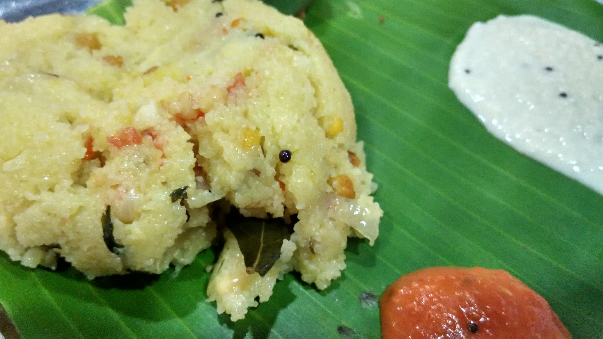

Upama

Description
Upama is a popular South Indian dish made from dry roasted semolina (also known as rava or sooji) cooked with spices, vegetables, and sometimes nuts.
It's a savory and hearty breakfast or snack option that is simple to make and quite versatile.
Ingredients
- Semolina (rava or sooji)
- Oil or ghee
- Mustard seeds
- Urad dal (split black gram)
- Chopped onions
- Chopped green chilies
- Curry leaves
- Ginger
- Assorted vegetables (such as carrots, peas, bell peppers)
- Water or broth
- Salt
- Turmeric powder
- Optionally, you can add nuts like cashews
- Garnish with chopped cilantro leaves
Steps
- Dry roast semolina until light golden brown.
- Prepare the tempering: Heat oil or ghee, add mustard seeds, and let them splutter. Then add urad dal and sauté until golden brown.
- Sauté chopped onions, green chilies, curry leaves, and ginger until onions turn translucent and aromatic.
- Add assorted vegetables and sauté until slightly tender.
- Pour water or broth into the pan, season with salt and turmeric powder, and bring to a boil.
- Gradually add the roasted semolina to the boiling water while stirring continuously to prevent lumps.
- Reduce heat, cover, and simmer until semolina is cooked and mixture thickens.
- Optionally, garnish with roasted nuts like cashews and chopped cilantro leaves.
- Serve hot as is or with a side of coconut chutney or pickle.